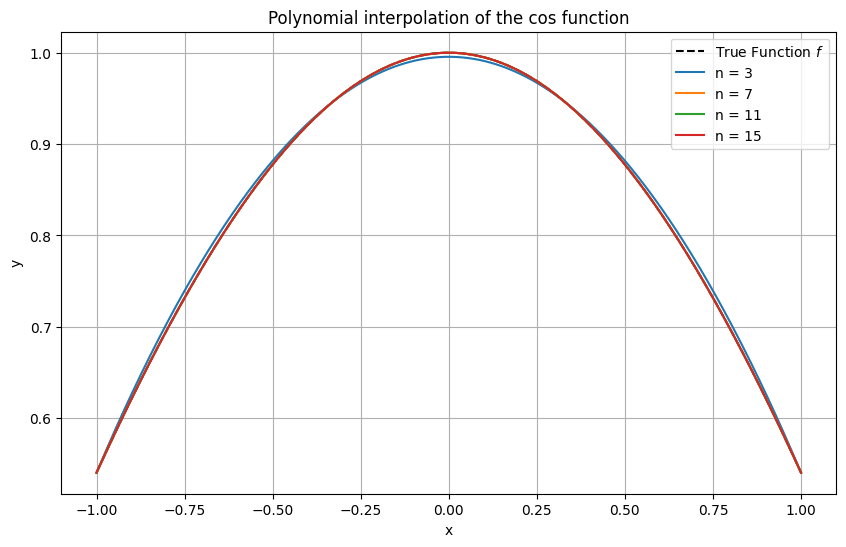
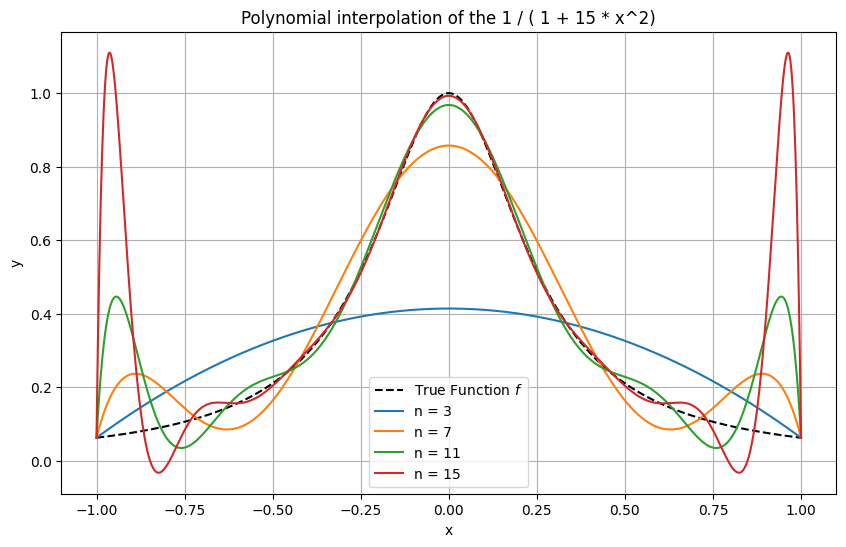
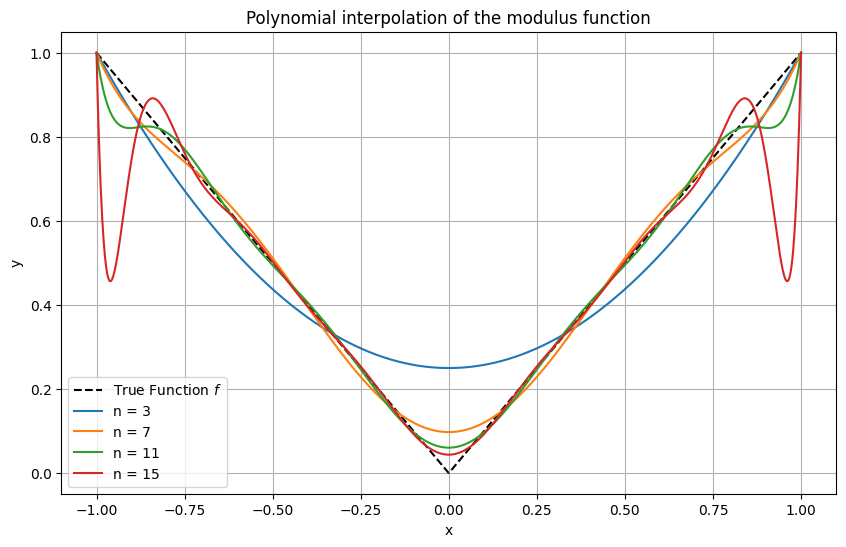
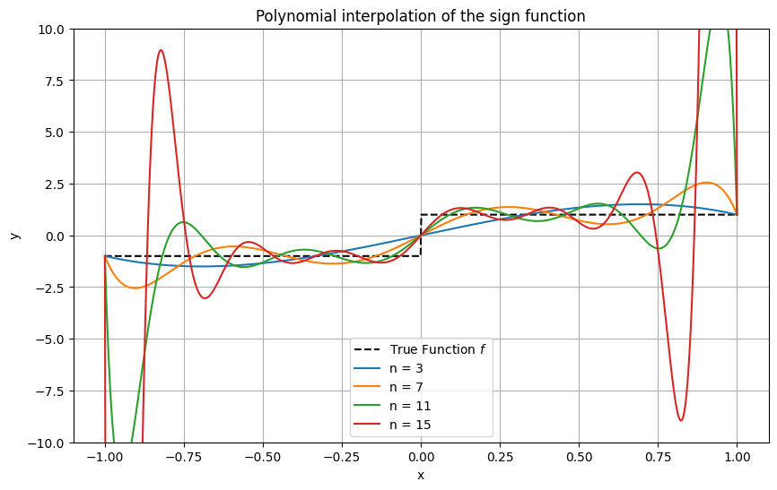

Polynomial interpolation#
The set of real polynomials of degree less than or equal to \(n\) is denoted by \(\mathcal{P}_n\). We consider the following task:
Polynomial Interpolation
Given \(n+1\) distinct points \(x_0,x_1,\dots,x_n\), and \(n+1\) values \(y_0,y_1,\dots,y_n\), find a polynomial \(p_n \in \mathcal{P}_n\) such that
In this section, we will answer the following questions:
Does a polynomial \(p_n\) with \(p_n(x_j)=y_j\) always exist, and if yes, is it unique?
How can we construct such a polynomial in practice?
If the values \(y_j\) are samples of a function, do we observe convergence to the function as \(n\rightarrow\infty\)?
To begin with, we consider the special case
meaning that \(y_i = 1\) and \(y_j = 0\) for \(i \neq j\). It has the solution
because \(\text{deg}(L_j)=n\) and \(L_j\) interpolates \(y_j = \delta_{ij}\) at \(x_j\). The functions \(L_k\) are called Lagrange basis polynomials.
The solution to the original interpolation problem is now constructed as
We refer to \(p\), when written in this form, as the Lagrange interpolation polynomial. We still need to prove uniqueness.
Theorem 9 (Existence and uniqueness of interpolating polynomial)
Given \(\{ (x_i,y_i) \}_{i=0}^n\) with \(x_i < x_{i+1}\), there exists a unique \(p_n \in \mathcal{P}_n\) such that \(p_n(x_i) = y_i\) for all \(i = 0, \ldots, n\).
Proof. Let \(q_n(x)\) be another polynomial of degree at most \(n\) that satisfies \(q_n(x_j)=y_j\). Let \(w_n:=p_n-q_n\). We then have \(w(x_j)=0\), \(j=0,\dots,n\). Hence, \(w_n\) is a polynomial of maximum degree \(n\) with \(n+1\) distinct zeros. However, since a nontrivial polynomial of degree \(n\) can have at most \(n\) zeros, it follows that \(w\equiv 0\), showing that \(p_n\) is the unique interpolation polynomial.
We denote the error polynomial by
Theorem 10 (Interpolation error bound)
Suppose \(f \in C^{n+1}[a,b]\) and \(a \le x_0 < \ldots < x_n \le b\). Let \(p \in \mathcal{P}_n\) such that \(p(x_i) = f(x_i)\) for \(i \in \{ 0, \dots, n\}\). Then for every \(x \in [a,b]\) there is a \(\xi \in [a,b]\), depending on \(x\), such that
The proof is given in the optional materials section. One disadvantage of the above interpolation error bound is that the result only applies to \(f \in C^{n+1}[a,b]\). The celebrated Weierstrass approximation theorem shows that control on higher-order derivatives is not necessary for the approximation by polynomials.
Fact: Weierstrass approximation theorem
Given \(f \in C[a,b]\) and \(\epsilon > 0\), there exists an \(n \in \mathbb{N}\) and \(p \in \mathcal{P}_n\) such that \(\| f - p \|_\infty < \epsilon\).
Here \(\| g \|_\infty = \max_{x \in [a,b]} |g(x)|\) denotes the \(\infty\)-norm on \(C[a,b]\).
The \(p\) of the Weierstrass approximation theorem has to be selected with much care, and an unrefined interpolation method will generally not provide polynomials which approximate arbitrarily well. This is mainly due to the Runge phenomenon.
Example 13 (Interpolation with uniformly distributed nodes)
Unless very smooth functions such as \(\cos\) are interpolated (recall that \(\| \cos^{(n)} \|_\infty = 1\) for all \(n\)th derivatives \(\cos^{(n)}\), \(n \in \mathbb{N}\)), one observes that interpolating polynomials of high-order exhibit strong oscillations near the interval ends. This behaviour is known as the Runge phenomenon.
Click through the tabs to see:
An example with infinitely many uniformly bounded derivatives.
An example with infinitely many derivatives.
An example with a continuous function.
An example with a discontinuous function.

Matplotlib code
import numpy as np
import matplotlib.pyplot as plt
from scipy.interpolate import lagrange
# Function to perform polynomial interpolation and plot
def plot_interpolation(f, nodes, xx, label):
values = f(nodes) # evaluate f at the nodes
# Perform polynomial interpolation
p = lagrange(nodes, values)
# evaluate interpolating polynomial at xx
p_xx = p(xx)
# Plot
plt.plot(xx, p_xx, label=label)
# Fine grid for plotting
xx = np.linspace(-1, 1, 1000)
# True function
f = lambda x: np.cos(x)
f_xx = f(xx)
# Plot the true function
plt.figure(figsize=(10, 6))
plt.plot(xx, f_xx, 'k--', label='True Function $f$')
# Plot for different n
for n in [3, 7, 11, 15]:
plot_interpolation(f, np.linspace(-1, 1, n + 1), xx, f"n = {n}")
# Formatting the plot
plt.title('Polynomial interpolation of the cos function')
plt.xlabel('x')
plt.ylabel('y')
plt.legend()
plt.grid(True)
plt.show()



To understand the Runge phenomenon, it is instructive to examine the error term
more carefully for \(C^\infty\) functions such as the \(x \mapsto \frac{1}{1 + 15 x^2}\) of the previous example. It consists of three parts:
the scaling factor \((n+1!)^{-1}\);
the error polynomial \(\omega_{n+1}(x)\), which measures how well the nodes are chosen;
the derivative \(f^{(n+1)}(\xi)\), which measures how difficult it is to approximate \(f\).
The following plot illustrates how the error polynomial attains its largest values near the domain boundaries.
Matplotlib code
import numpy as np
import matplotlib.pyplot as plt
def omega(nodes, xx):
omega_xx = np.ones(len(xx))
for xj in nodes: omega_xx = omega_xx * (xx - xj)
return omega_xx
# Fine grid for plotting
xx = np.linspace(-1, 1, 1000)
# Plot for different n
plt.figure(figsize=(10, 6))
for n in [6, 9, 12, 15]:
nodes = np.linspace(-1, 1, n+1)
omega_xx = omega(nodes, xx)
plt.plot(xx, omega_xx, label=f"n = {n}")
# Formatting the plot
plt.title('Error polynomial of uniformly distributed points')
plt.xlabel('x')
plt.ylabel('y')
plt.legend()
plt.grid(True)
plt.show()
Note that the error polynomial’s \(\infty\)-norm decreases as \(n \to \infty\); however, it is not fast enough to counter the often observed increase in the magnitude of \(f^{(n+1)}(\xi)\) as \(n \to \infty\).
Can nodes be distributed non-uniformly to better reduce the magnitude of \(\omega\) throughout the interpolation domain? In other words, is there a distribution of nodes \(\{\tilde{x}_0, \ldots, \tilde{x}_m \}\) which has the smallest error polynomial \(\tilde{\omega}_{n+1}\)?
There is indeed such a choice of nodes: these are the roots of Chebyshev polynomials. For \(n \in \mathbb{N}\) they are defined as
(Note: Some texts define \(i\) to start from \(1\) in the definition of Chebyshev nodes and adjust \(n\) accordingly. This is only a notational difference.)
Theorem 11
Consider \(n+1\) arbitrary, pairwise distinct nodes \(x_0, x_1, \ldots, x_n\) in \([-1,1]\) with error polynomial \(\omega_{n+1}\). Then
\(\tilde{\omega}_{n+1}\) is the error polynomial of the Chebyshev nodes.
The proof is given in the optional materials section. Important for us is that Chebyshev nodes address the issue of Runge’s phenomenon successfully, as illustrated in the following example.
The trick here is that Chebyshev nodes have a finer spacing near the interval boundary, preventing the error polynomial’s strong oscillations.
Matplotlib code
import numpy as np
import matplotlib.pyplot as plt
def omega(nodes, xx):
omega_xx = np.ones(len(xx))
for xj in nodes: omega_xx = omega_xx * (xx - xj)
return omega_xx
# Fine grid for plotting
xx = np.linspace(-1, 1, 1000)
# Plot for different n
plt.figure(figsize=(10, 6))
for n in [15]:
# Define the Chebyshev nodes
nodes = np.cos(np.pi * (2.0 * np.arange(0, n + 1) + 1) / (2 * (n+1)))
omega_xx = omega(nodes, xx)
plt.plot(xx, omega_xx, label=f"n = {n}")
# Formatting the plot
plt.title('Error polynomial for Chebechev nodes')
plt.xlabel('x')
plt.ylabel('y')
plt.legend()
plt.grid(True)
plt.show()
Example 14 (Interpolation with Chebyshev nodes)
Here, the same functions as above are interpolated again, this time using Chebyshev nodes. The difference is striking, with a fairly good approximation even in the discontinuous example of the sign function.
Matplotlib code
import numpy as np
import matplotlib.pyplot as plt
from scipy.interpolate import lagrange
# Function to perform polynomial interpolation and plot
def plot_interpolation(f, nodes, xx, label):
values = f(nodes) # evaluate f at the nodes
# Perform polynomial interpolation
p = lagrange(nodes, values)
# evaluate interpolating polynomial at xx
p_xx = p(xx)
# Plot
plt.plot(xx, p_xx, label=label)
# Fine grid for plotting
xx = np.linspace(-1, 1, 1000)
# True function
f = lambda x: np.cos(x)
f_xx = f(xx)
# Plot the true function
plt.figure(figsize=(10, 6))
plt.plot(xx, f_xx, 'k--', label='True Function $f$')
# Plot for different n
for n in [3, 7, 11, 15]:
# Define the Chebyshev nodes
chebyshev_nodes = np.cos(np.pi * (2.0 * np.arange(0, n + 1) + 1) / (2 * (n+1)))
plot_interpolation(f, chebyshev_nodes, xx, f"n = {n}")
# Formatting the plot
plt.title('Chebyshev interpolation of the cos function')
plt.xlabel('x')
plt.ylabel('y')
plt.legend()
plt.grid(True)
plt.show()
Python skills#
The following code implements Lagrange interpolation and compares Chebyshev and uniform interpolation of the sign function in a single plot.
import numpy as np
import matplotlib.pyplot as plt
def chebyshev_nodes(n):
"""Generate Chebyshev nodes."""
return np.cos((2 * np.arange(1, n + 1) - 1) * np.pi / (2 * n))
def uniform_nodes(n):
"""Generate uniform nodes."""
return np.linspace(-1, 1, n)
def lagrange_interpolation(nodes, f, x_eval):
"""Perform Lagrange interpolation using given nodes."""
def lagrange_basis(x, k):
term = 1
for j in range(len(nodes)):
if j != k:
term *= (x - nodes[j]) / (nodes[k] - nodes[j])
return term
y_eval = np.zeros_like(x_eval)
for k in range(len(nodes)):
y_eval += f(nodes[k]) * lagrange_basis(x_eval, k)
return y_eval
# Non-smooth function to interpolate
f = lambda x: np.sign(x)
# Number of nodes
n = 10
# Evaluation points
x_eval = np.linspace(-1, 1, 500)
# Perform Lagrange interpolation with Chebyshev and Uniform nodes
y_interp_chebyshev = lagrange_interpolation(chebyshev_nodes(n), f, x_eval)
y_interp_uniform = lagrange_interpolation(uniform_nodes(n), f, x_eval)
# Plot
plt.figure(figsize=(10, 6))
plt.plot(x_eval, f(x_eval), label='Original Function (|x|)', linewidth=2)
plt.plot(x_eval, y_interp_chebyshev, '--', label='Chebyshev Interpolation')
plt.plot(x_eval, y_interp_uniform, '-.', label='Uniform Interpolation')
plt.scatter(chebyshev_nodes(n), f(chebyshev_nodes(n)), color='red', label='Chebyshev Nodes')
plt.scatter(uniform_nodes(n), f(uniform_nodes(n)), color='green', label='Uniform Nodes')
plt.xlabel('x')
plt.ylabel('y')
plt.title('Comparison of Chebyshev and Uniform Interpolation')
plt.legend()
plt.grid(True)
plt.show()
Notice how the spacing of Chebyshev nodes is tighter near the interval ends:
Lagrange interpolation and related methods are built into Scipy, see this link.
Self-check questions#
Question
Given the nodes \(\{x_0, \ldots, x_n\}\), show that the linearity of the mapping
where \(p \in \mathcal{P}_n\) is the polynomial interpolating the values \(y_i\).
Answer
Given the values \(y_0, y_1, \ldots, y_n \in \mathbb{R}\) and \(z_0, z_1, \ldots, z_n \in \mathbb{R}\), let \(p\) and \(q\) be the respective interpolating polynomials. Then, for \(\alpha, \beta \in \mathbb{R}\),
and, for \(i \in \{0, \ldots, n\}\),
Hence, \(\alpha p + \beta q\) is the interpolating polynomial for the values \(\alpha y_i + \beta z_i\) at \(x_i\), \(i \in \{0, \ldots, n\}\), which proves the linearity of the mapping.
Question
Consider the following set of data points:
\((x_0, y_0) = (1, 1)\)
\((x_1, y_1) = (2, 3)\)
\((x_2, y_2) = (3, 2)\)
Calculate the Lagrange interpolating polynomial that passes through these points.
Answer
We find
and
and
Using the given \(y\) values, we have \(P(x) = 1 \cdot L_0(x) + 3 \cdot L_1(x) + 2 \cdot L_2(x)\) so that
Question
Suppose that the interpolation nodes are arranged symmetrically around the origin: for each node \(x_j\), the node \(-x_j\) also exists in the set of nodes.
Prove that the Lagrange interpolant \(p\) of an odd function is odd.
Answer
We must show that \(p(-x) = -p(x)\). Denote \(x_{i'} = - x_i\) for \(i \in \{0, \ldots, n\}\). We find
Substituting these into \(p(-x)\), we get:
Question
Some applications require that the interpolating polynomial matches prescibed derivative values in addition to function values. In this spirit, show that for pairwise distinct real numbers \(x_0, x_1, \ldots, x_r\) and nonnegative integers \(m_0, m_1, \ldots, m_r \in \mathbb{N}\) satisfying
together with given real numbers \(f_j^{(\nu)}\) for \(\nu = 0, 1, \ldots, m_j - 1\) and \(j = 0, 1, \ldots, r\), there is exactly one polynomial \(P \in \mathcal{P}_n\) such that
Here \(P^{(\nu)}\) denotes the \(\nu\)th derivative of \(P\).
Answer
Uniqueness: Let \(P, Q \in \mathcal{P}_n\) be two polynomials that satisfy the interpolation conditions. Consider their difference \(R := P - Q\). We have
In other words, \(R(x)\) and its first \((m_j - 1)\) derivatives vanish at each \(x_j\).
A root of multiplicity \(m\) at a point \(x = x_0\) means the polynomial and its first \((m - 1)\) derivatives vanish at \(x_0\). Consequently, \(R\) has a root of multiplicity \(m_j\) at \(x_j\). Summed over \(j = 0,1,\dots,r\), the number of roots of \(R\), counted with multiplicity, is
A non-zero polynomial of degree at most \(n\) can have at most \(n\) distinct roots, counting multiplicities. But here, \(R\) has \(n+1\) roots in total, implying that \(R \equiv 0\). Therefore, \(P \equiv Q\), which proves uniqueness.
Existence: To prove existence, we use the ansatz
for some coefficients \(\alpha_0, \alpha_1, \ldots, \alpha_n\). The interpolation conditions
translate into
where
This forms a system of \(\sum_{j=0}^r m_j \;=\; n + 1\) linear equations for the \(n + 1\) unknowns \(\alpha_0, \alpha_1, \ldots, \alpha_n\). By the uniqueness result above, if all \(f_j^{(\nu)} = 0\), the only solution is the trivial one:
Hence, the corresponding system matrix has only the trivial null space and is therefore invertible. It follows that the general system also admits a (non-trivial) solution. This proves existence.
Question
Let \(\varphi_0, \varphi_1, \dots, \varphi_n: C[a,b] \to \mathbb{R}\) be linear functionals, and let \(\mathcal{V} \subset C[a,b]\) be a linear subspace of dimension \(n+1\).
Show that the generalised interpolation problem
Find \(v \in \mathcal{V}\) such that \(\varphi_j(v) = \varphi_j(f)\) for \(j = 0,1,\dots,n\)
is uniquely solvable for each \(f \in C[a,b]\) if and only if the function \(f=0\) has only \(v=0\) as its generalised interpolant.
Assume the generalised interpolation problem is uniquely solvable for every \(f \in C[a,b]\). Let \(\mathcal{L}_n : C[a,b] \to \mathcal{V}\) be the corresponding interpolation operator, i.e. \(\mathcal{L}_n f = v\). Show that \(\mathcal{L}_n\) is a linear map and that, for \(f \in C[a,b]\), the identity \(\mathcal{L}_n f = f\) holds if and only if \(f\) lies in \(\mathcal{V}\).
Answer
We consider the linear map
Because \(\dim \mathcal{V} = n+1\), this linear map \(A\) is injective if and only if it is bijective.
Part 1. First \(\Longrightarrow\). Clearly, for the function \(f=0\), the generalised interpolation problem is solved by \(v = 0\). By the assumption of uniqueness, \(v=0\) is the only solution.
Now \(\Longleftarrow\). Under the hypothesis, \(A\) is injective and thus bijective. Therefore, for every continuous function \(f : [a,b] \to \mathbb{R}\), there exists exactly one function \(v \in \mathcal{V}\) satisfying the interpolation conditions \(\varphi_j(v) = \varphi_j(f)\) for \(j = 0,1,\dots,n\). That proves the statement.
Part 2. Consider the map
This map \(Q\) is linear, and therefore the operator \(\mathcal{L}_n = A^{-1} Q\) is also linear.
Furthermore, for any \(f \in \mathcal{V}\), the solution to the generalised interpolation problem is exactly \(v = f\). Consequently, \(\mathcal{L}_n f = f\). Finally, for every continuous function \(f : [a,b] \to \mathbb{R}\), we have \(\mathcal{L}_n f \in \mathcal{V}\). Thus, if \(\mathcal{L}_n f = f\), it follows that \(f\) itself must lie in \(\mathcal{V}\). This completes the proof.
Optional material#
Proof of the interpolation error bound
Recall Rolle’s theorem from the appendix.
Proof. For any \(x = x_i\), where \(x_i\) is one of the interpolation points, the error formula holds trivially since \(f(x_i) = p(x_i)\) and \(\omega_{n+1}(x_i) = 0\).
For \(x \notin \{x_0, \ldots, x_n\}\), consider the auxiliary function defined on \([a, b]\):
where \(C\) is a constant chosen such that \(\psi(x) = 0\).
The function \(\psi\) has at least \(n+2\) distinct zeros: \(x_0, \ldots, x_n\), and \(x\). By applying Rolle’s Theorem successively, we find that \(\psi'\) has at least \(n+1\) distinct zeros, \(\psi''\) has at least \(n\) zeros, and so on, up to \(\psi^{(n+1)}\), which must have at least one zero \(\xi\) in the interval \([a, b]\).
Since \(p\) is a polynomial of degree at most \(n\), its \((n+1)\)th derivative is identically zero, i.e., \(p^{(n+1)} \equiv 0\). For \(\omega_{n+1}\), a polynomial of degree \(n+1\) with leading coefficient \(1\), its \((n+1)\)th derivative is constant: \(\omega_{n+1}^{(n+1)} = (n+1)!\).
Thus, at the root \(\xi\), we have \(0 = \psi^{(n+1)}(\xi) = f^{(n+1)}(\xi) - C (n+1)!\), leading to:
Substituting this value back into the definition of \(\psi\) completes the proof.
Chebyshev interpolation
Definition 9
Chebyshev polynomials of first kind are defined by the recursive formula
Chebyshev polynomials are considered on the reference interval \([-1,1]\) with only a few exceptions. We shall use the terms Chebyshev polynomial of the first kind and Chebyshev polynomial synonymously.
Theorem 12
For \(n \in \mathbb{N}\) and \(x \in [-1,1]\) the identity \(T_n(x) = \cos(n \arccos x)\) holds.
Proof. The result is obvious for \(n=0\) and \(n=1\). Suppose \(T_n(x) = \cos(n \arccos x)\) is true. Let \(x = \cos \theta\). Then
Here we used \(\cos (\alpha \pm \beta) = \cos \alpha \cos \beta \mp \sin \alpha \sin \beta\).
It follows that the roots of \(T_n\) are
and that the extrema of \(T_n\) are attained at
with \(T_n(\tilde{y}_i) = (-1)^i\). The roots \(\tilde{x}_i\) are called Chebyshev nodes. The below theorem states that the \(\tilde{x}_i\) are the best nodes to minimise the oscillations of the error polynomial.
Theorem 13
Suppose \(p \in \mathcal{P}_n\) interpolates \(f \in C^{(n+1)}[a,b]\) at the Chebyshev nodes \(\tilde{x}_0, \ldots, \tilde{x}_n\). Let \(\tilde{\omega}_{n+1}\) be the error polynomial corresponding to these nodes. Then
and
Consider \(n+1\) arbitrary, pairwise distinct nodes \(x_0, x_1, \ldots, x_n\) in \([-1,1]\) with error polynomial \(\omega_{n+1}\). Then
Proof. Notice \(\| 2^{-n} T_{n+1} \|_\infty = 2^{-n}\) since \(T_{n+1}(x) = \cos((n+1) \arccos x)\). Because \(T_{n+1}\) and \(\tilde{\omega}_{n+1}\) both belong to \(\mathcal{P}_{n+1}\) and vanish at \(\tilde{x}_0, \ldots \tilde{x}_n\) there is a \(c \in \mathbb{R}\) such that \(T_{n+1} = c \, \tilde{\omega}_{n+1}\). Recalling the definition of Chebyshev nodes, one has \(c = 1\) if \(n = 1\). Because of \(T_{n+1}(x) = 2 x T_n(x) - T_{n-1}(x)\) the highest-order coefficient of \(T_{n+1}\) is twice that of \(T_n\). As the highest-order coefficient of \(\tilde{\omega}_{n+1}\) is \(1\), induction gives \(c = 2^n\). The Interpolation error bound implies
Suppose there are nodes \(x_0, x_1, \ldots, x_n\) such that \(\| \tilde{\omega}_{n+1} \|_\infty > \| \omega_{n+1} \|_\infty\). Then \(q := \tilde{\omega}_{n+1} - \omega_{n+1}\) belongs to \(\mathcal{P}_n\) and at the extrema of \(T_{n+1}\)
By the intermediate value theorem, \(q\) has \(n+1\) roots. Thus \(q = 0\).
Barycentric interpolation
In practical applications, Barycentric Interpolation, a variant of Lagrange interpolation, is often utilized due to its computational efficiency.
Let us define the function \(\ell(x) = \prod_{j=0}^n (x - x_j)\), and introduce weights \(w_k = \left[\prod_{j=0, j\neq k}^n (x_k - x_j)\right]^{-1}\). With these definitions, the Lagrange basis polynomials can be expressed as:
leading to the polynomial interpolation formula:
This expression is known as the first Barycentric form. It allows the efficient computation of \(p_n(x)\) in \(\mathcal{O}(n)\) operations, assuming the weights \(w_k\) are precomputed.
An even more streamlined approach is possible by interpolating the constant function \(1\), which results in:
This leads to an alternative formulation of the polynomial:
This expression is referred to as the second Barycentric form. It notably avoids the direct computation of \(\ell(x)\), further simplifying the interpolation process.